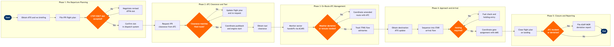

| Step | L4 Step Name | KPI / Target | Pain Point / Risk | Gate |
|---|---|---|---|---|
| 1.1 | Obtain ATIS & meteorological briefing | Briefing completed ≥45 min before STD; 100% crew acknowledgement rate | GoDirect ATIS latency can lag live tower broadcasts by 3–5 min during high-volume periods, risking crew departure on stale altimeter settings | |
| 1.2 | File IFR flight plan with ANSP | Flight plan filed ≥60 min before STD per ICAO Doc 4444; acceptance rate ≥99% | NAVBLUE route optimisation does not automatically incorporate FAA Coded Departure Routes (CDRs) during Ground Delay Programs, requiring manual dispatcher override | |
| 1.3 | Request CTOT/EDCT slot from ATFM system | EDCT compliance rate ≥95%; slot deviation window ±5 min | TFMS EDCT updates can arrive with <15 min notice, making ground crew coordination nearly impossible during high-frequency departure banks at focus cities | ⚠ |
| 1.4 | Negotiate revised slot if CTOT unacceptable | Slot substitution request processed within 10 min of receipt; substitution approval rate ~60% per FAA ATCSCC data | FAA does not guarantee slot substitution approval; carriers without dedicated ATC coordination desk (like low-cost carriers) suffer higher rejection rates | |
| 2.1 | Request IFR departure clearance from ATC | Clearance received ≥15 min before EDCT; clearance readback accuracy 100% | Voice clearance delivery congestion at Class B airports (ORD, ATL, LAX) causes average 8–12 min clearance delays during push banks; PDC via ACARS not universally available | ⚠ |
| 2.2 | Verify clearance against filed route & amend if needed | Route amendment turnaround <5 min; zero departures on unapproved route | ATC short-notice route amendments (e.g. miles-in-trail restrictions) require rapid NAVBLUE recalculation that may invalidate pre-filed fuel load, triggering re-release | |
| 2.3 | Coordinate pushback & engine start with ground ATC | Pushback-to-wheels-up compliance with EDCT ±5 min; gate conflict rate <2% | AMS gate conflict data and ATC ground movement frequency are separate systems with no real-time integration, causing dispatcher blind spots during congested apron operations | |
| 2.4 | Obtain taxi clearance & confirm runway assignment | Taxi time within airline benchmark (e.g. ≤12 min at focus cities); runway incursion events = 0 | FliteDeck moving-map airport diagrams rely on Jeppesen chart update cycle (28-day AIRAC); temporary construction NOTAMs between cycles create taxiway routing errors if crew relies solely on EFB | |
| 3.1 | Monitor ATC sector handoffs & frequency changes | ACARS position report every 30 min or at each waypoint; missed report alert <2 min | ACARS coverage gaps over oceanic/remote segments require HF radio fallback (SELCAL), which many newer pilots have limited proficiency with due to shift away from HF in domestic ops | |
| 3.2 | Receive & assess TFMS en-route flow advisories | AFP compliance rate ≥97%; dispatcher response to advisory <10 min | TFMS AFP advisories can affect multiple concurrent flights simultaneously; single dispatcher managing 15+ flights during an AFP event is a documented overload risk with no automated prioritisation tool | ⚠ |
| 3.3 | Coordinate weather deviation or reroute with ATC | Deviation request approval by ATC <3 min after pilot request; fuel impact assessed 100% of deviations | Crew-initiated deviation requests during congested sector workload may receive delayed ATC responses; no automated conflict-free re-route suggestion pushed from ground to cockpit in real time | ⚠ |
| 4.1 | Obtain destination ATIS & update approach briefing | ATIS update obtained ≥30 min before TOD; alternate fuel carried 100% when wx within 3h of approach minima | D-ATIS refresh intervals (30 min at many airports) can lag rapidly deteriorating convective conditions, creating a wx state mismatch between briefing and actual approach environment | |
| 4.2 | Sequence into STAR & configure for arrival flow | STAR compliance rate ≥99%; speed restriction deviation events <0.5% of arrivals | Late STAR reassignments by TRACON (within 50 NM) require rapid FMS re-programming under high workload; FliteDeck chart page and FMS are not electronically linked, requiring dual cross-check | |
| 4.3 | Execute holding pattern if ATC flow delay required | Holding fuel contingency ≥30 min per FAR 121.639; divert decision made before minimum divert fuel threshold | NAVBLUE fuel models do not auto-recalculate holding burn in real time from cockpit; dispatcher relies on crew verbal reports, introducing latency risk in marginal fuel scenarios | ⚠ |
| 4.4 | Coordinate gate & stand assignment with airport ops | Gate assignment confirmed ≥20 min before ETA; gate conflict rate <1% | ATC arrival sequencing changes (e.g. runway change) can shift ETA by 10–20 min, invalidating pre-assigned gate in AMS; no automated ATC-to-AMS ETA feed at most regional airports | |
| 5.1 | Close flight plan & confirm arrival report | Flight plan closure within 5 min of block-in; OOOI data accuracy 100% | Manual flight plan closure is required when ATC arrival message (ARR) is not auto-forwarded to NAVBLUE; missed closures generate ATC search-and-rescue alerts after 30 min per ICAO Annex 2 | |
| 5.2 | Review ATC communications log for deviations | Post-flight review completed within 2 hours of block-in for all flagged flights | ACARS stores text messages but does not archive voice ATC transmissions; voice deviations are entirely reliant on crew self-report, creating an underreporting risk for FAR Part 91/121 deviations | ⚠ |
| 5.3 | File ASAP/MOR report for ATC deviation or incident | ASAP report filed within 24 hours of incident per FAA AC 120-66B; 100% of flagged deviations reported | No direct integration between NAVBLUE deviation logs and the airline ASAP reporting portal; dispatcher must re-enter data manually, creating transcription errors and reporting delays |